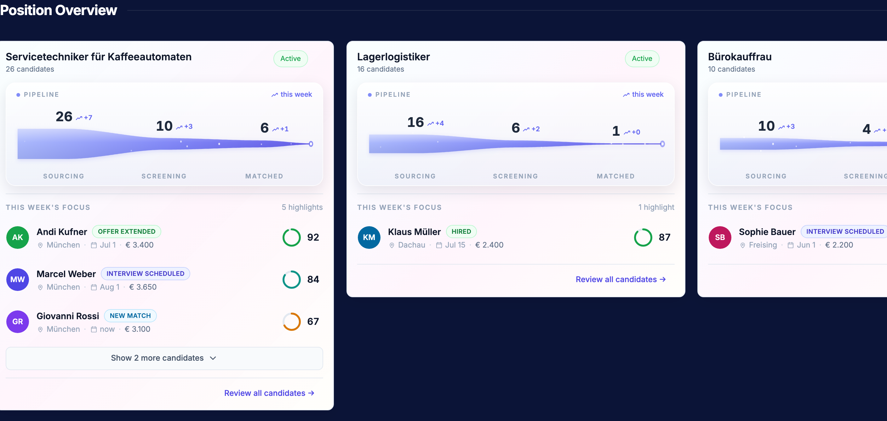
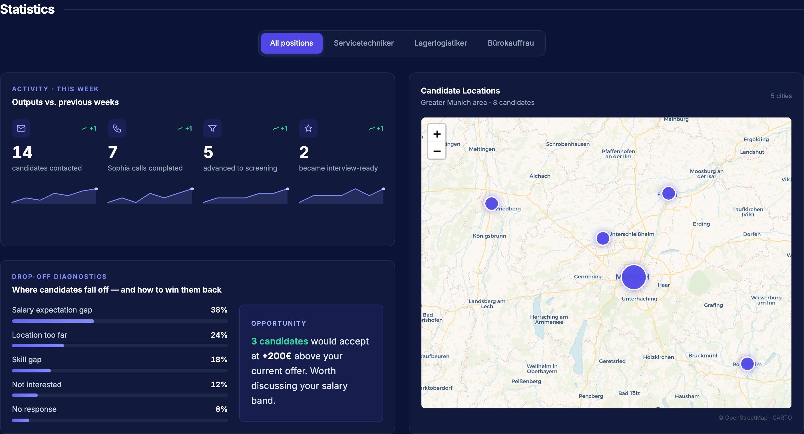
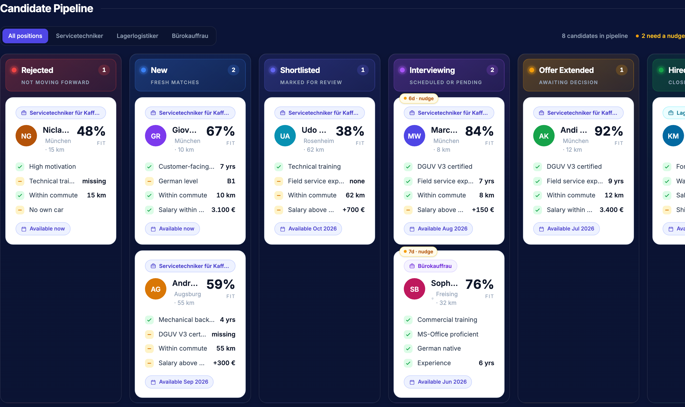
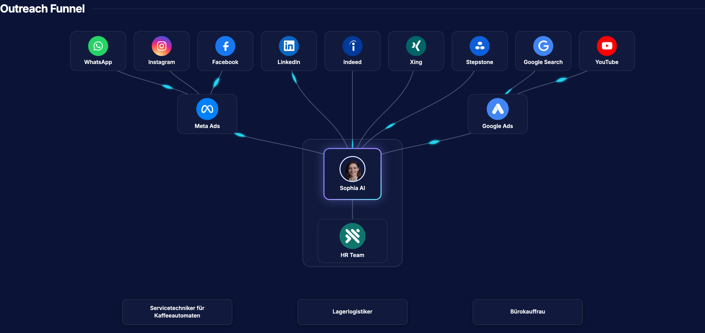
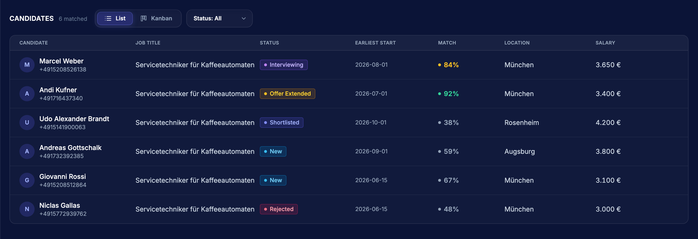
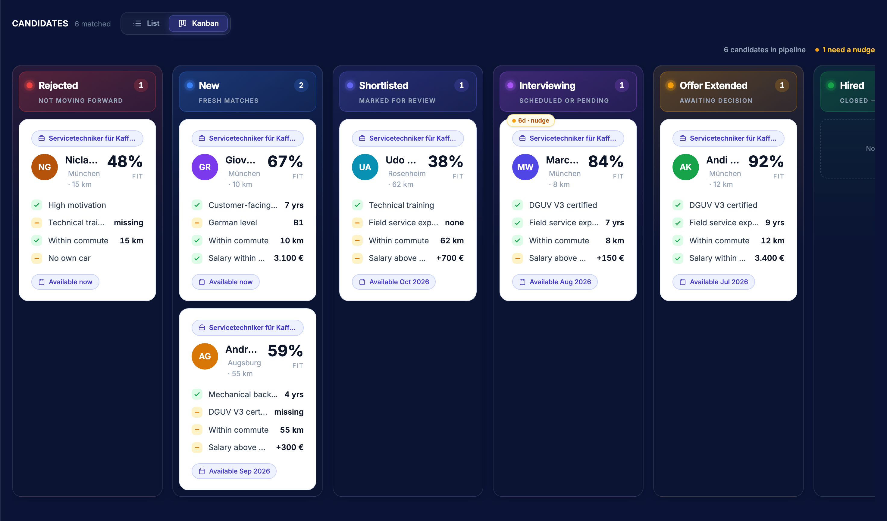
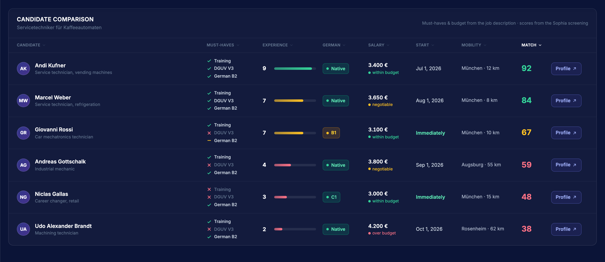
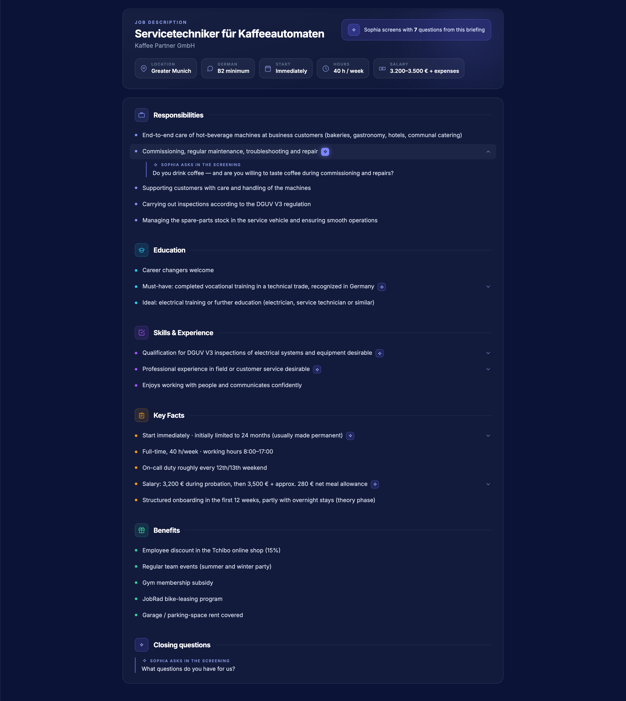
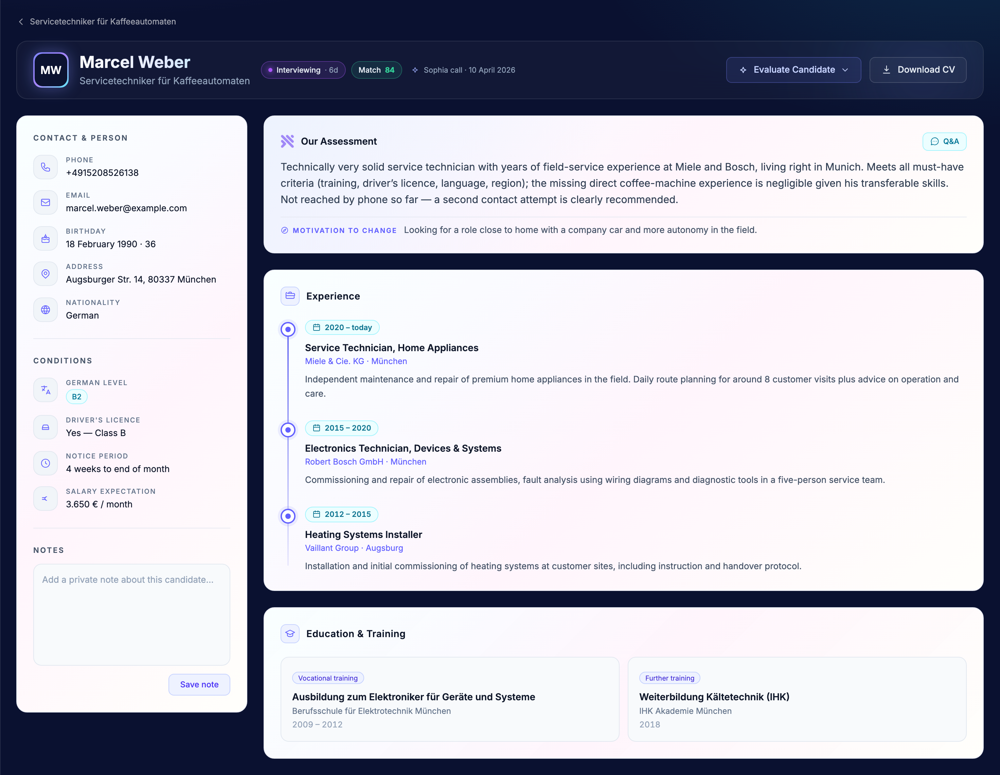
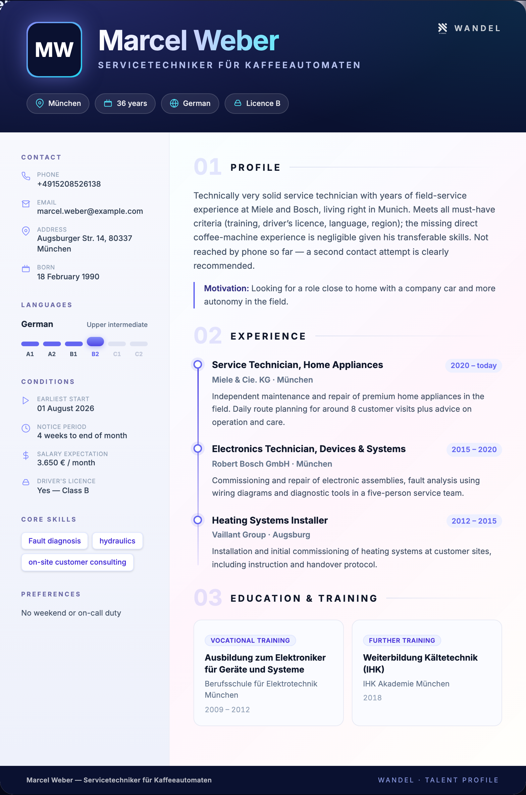

Engineering Handover · v1.0 · Wandel Dashboard
The client-facing recruiting UI (Dashboard, Position Workspace, Candidate Profile) exists as a fully working React prototype, currently powered by hard-coded mock data. This document specifies — screen by screen, field by field — what the backend must provide, how data flows between the pages, which values are deterministic rules vs. LLM outputs, the suggested database schema, and the LLM prompts needed to replace every mock.
The UI was built design-first: every screen is final in look, feel and interaction, but reads from constants inside the React components. Your job is to replace those constants with real data without changing the UI. For every block this document tells you:
application (candidate × position) — not the candidate. Stage, match score, criteria, notes and assessment all belong to an application. One person applying to two positions = two applications with independent stages. (§07)src/lib/talentStore.ts) — replace that store with the API, keep the behavior. (§03)| Milestone | Scope | Unblocks |
|---|---|---|
| M1 — Schema + read APIs | §07 tables, seed with the current mock values, GET endpoints (A.4). Frontend swaps constants for fetches — UI unchanged. | Everything renders from the DB |
| M2 — Stage writes | PATCH /applications/:id + event log + stage_entered_at reset. Wire all three write surfaces (§03). | Board, dropdown & table stay in sync; stall logic works |
| M3 — LLM pipeline | P1/P5 at position creation; P2/P3/P4 post-call; P6 on rejection (§08). | Real scores, assessments, questions |
| M4 — Metrics & geo | Event rollup → weekly_metrics; geocoding at ingest; P7 weekly insight. | Hero numbers, statistics, map, funnels |
| M5 — Cleanup | Notes persistence, auth/client scoping, open decisions from §10 resolved. (Routes are already parameterized; one profile layout already in place.) | Production-ready |
| Term | Meaning |
|---|---|
| Wandel | The recruiting platform this dashboard belongs to. The UI shown here is the client-facing view (the hiring company's HR team). |
| Client | The hiring company (e.g. “Techbridge GmbH” in the hero). All data is scoped per client. |
| Sophia | The AI voice agent that calls every candidate in German and asks the position's screening questions. Its structured answers are the most important data source (tag Sophia Call). |
| Position | One open role at one client (e.g. “Servicetechniker für Kaffeeautomaten”). Carries the JD, must-haves, budget and screening questions. |
| Application | One candidate matched to one position. Carries stage, match score, criteria, assessment, notes. The central record (§07). |
| Stage | Where an application stands in the decision pipeline: rejected · new · shortlist · interview · offer · hired (§03). |
| Match score | 0–100 fit of a candidate for a position, LLM-generated post-call (P2). Shown in the table, comparison, profile header and cards. |
| Must-have | A hard K.o. criterion from the JD (e.g. “DGUV V3”, “Deutsch B2”). Evaluated per candidate as ✓ / partial / ✕ (R4). |
| JD | Job description. Parsed at position creation into five universal sections (5.3.1) plus hard facts. |
Kanban board / PipelineBoard | The drag-and-drop stage board. One shared component, used on the dashboard (all positions) and inside a position (scoped). |
| Stalled / nudge | An application sitting ≥ 5 days in a non-terminal stage — flagged so the recruiter acts (R5). |
| Funnel (acquisition) | The Sourcing → Screening → Matched curve on dashboard position cards. Decided definitions: Sourcing = applications via Meta lead ads, Screening = completed Sophia calls, Matched = matched to the position. Independent of the kanban stages. |
Five upstream sources feed the database; the three feature areas read from it. The Sophia voice call is the most important source — most decision-relevant fields are structured answers from that call.
SOURCES DATABASE UI (this document) ──────────────────────── ───────────────────────── ───────────────────────────── Meta Lead Ads / Forms ──┐ 04 · Dashboard name, phone, job_identifier │ ┌──────────────────┐ hero metrics, funnels, ├──▶ │ candidates │ statistics, kanban board, Sophia call (ElevenLabs) ──┤ │ positions │ locations map, outreach structured answers, transcript │ │ applications │ ◀─── summary, audio │ │ (cand × position │ 05 · Position Workspace │ │ + stage, match) │ candidate table, kanban, LLM post-processing ──┤ │ events / metrics │ comparison matrix, assessment, match score, │ │ jd_documents │ job description + questions screening questions │ └──────────────────┘ ◀─── │ 06 · Candidate Profile Recruiter UI (manual) ──┤ header meta, assessment, stage moves, notes │ Q&A, facts, experience, │ notes, CV export System (computed) ──┘ deltas, histories, distances
Key consequence of this architecture: the stage of an application is written once and read everywhere (dashboard board, position table, position kanban, comparison, profile header, profile evaluate-dropdown). See §03.
| Route | Component | Purpose |
|---|---|---|
/dashboard | src/dashboard/Dashboard.tsx | Client-facing overview: hero metrics, position funnels, statistics, kanban pipeline, outreach funnel. |
/clients/positions/:positionId | src/positions/PositionWorkspace.tsx | One position's workspace: Candidate / Comparison / Job Description tabs. Parameterized by mock position id (p1…p3); /clients/positions without an id falls back to p1. Positions without seeded JD/screening data render explicit empty states. |
/clients/positions/candidate/:id | src/positions/PositionCandidateDetail.tsx | Candidate profile (single layout, ProfileFactsRail). The back link resolves to the position the candidate is matched to. |
| # | From | Action | To | Mechanism today |
|---|---|---|---|---|
| 2.1 | Dashboard · position card | “Review all candidates →” | Position workspace | /clients/positions/:positionId via a title→id lookup (POSITION_ID_BY_TITLE Mock — becomes the position id on the record). |
| 2.2 | Dashboard · focus-card candidate row | click row | Candidate profile | /clients/positions/candidate/:id |
| 2.3 | Dashboard · map popup | click candidate name | Candidate profile | /clients/positions/candidate/:id |
| 2.4 | Dashboard · kanban card | click card body | Candidate profile | /clients/positions/candidate/:id |
| 2.5 | Position · candidate table row | click row | Candidate profile | /clients/positions/candidate/:id |
| 2.6 | Position · comparison row | “Profile” button | Candidate profile | /clients/positions/candidate/:id |
| 2.7 | Candidate profile | back link | Position workspace | resolves the candidate's matched position → /clients/positions/:positionId |
'1'…'8'), defined in src/lib/talentStore.ts and consistent across every
surface — same name, city, match score and stage on the dashboard cards, the board, the table, the
comparison and the profile. In production keep this guarantee: ids are globally unique per candidate,
and position-scoped data (stage, match, comparison row) hangs off an application
(candidate × position), not the candidate itself. See §07.
One stage enum drives four different UI surfaces. In the prototype it is defined exactly once —
STAGES in src/lib/talentStore.ts — and every surface imports it from there.
Keep that: in the backend it is one enum on the application record.
| Stage key | Label | Accent | Terminal? | Appears in |
|---|---|---|---|---|
rejected | Rejected | #ef4444 | yes | Kanban, profile evaluate-dropdown |
new | New | #3b82f6 | — | all four surfaces |
shortlist | Shortlisted | #6366f1 | — | all four surfaces |
interview | Interviewing | #a855f7 | — | all four surfaces |
offer | Offer Extended | #f59e0b | — | all four surfaces |
hired | Hired | #16a34a | yes | Kanban, profile evaluate-dropdown |
The four surfaces and their current (duplicated) definitions:
| # | Surface | File / constant | Stage subset | Writes? |
|---|---|---|---|---|
| 3.1 | Dashboard kanban board | Dashboard.tsx · PipelineBoard (stages from the store) | all 6 | Editable drag & drop → stage move |
| 3.2 | Position candidate table “Status” | PositionWorkspace.tsx · STATUS_PILL (styles only — stage from the store) | all 6 | Read-only + filter dropdown |
| 3.3 | Position kanban view | re-uses PipelineBoard with restrictPosition | all 6 | Editable drag & drop |
| 3.4 | Profile “Evaluate Candidate” dropdown + header tag | ProfileFactsRail.tsx · EVAL_CATEGORIES = STAGES | all 6 | Editable select → stage move |
src/lib/talentStore.ts. Drag a card on a kanban
board or pick a stage in the profile's evaluate dropdown, and the status pill in the table, the header
tag on the profile and the highlight tags on the dashboard cards all update instantly (days-in-stage
resets to 0 on every move). Your job: replace this in-memory store with the API — a
stage write must persist to applications.stage, reset
applications.stage_entered_at = now() and append a row to application_events.
The store module is documented and maps 1:1 to those fields.
Computed A card is stalled when
stage is not terminal AND days_in_stage ≥ 5 (STALL_DAYS = 5 in
Dashboard.tsx). The board header shows “N need a nudge”; stalled cards get an
amber “{days}d · nudge” chip. days_in_stage = floor((now − stage_entered_at) / 86400s).
src/dashboard/Dashboard.tsx (~2,000 lines, all mock data at the top of the file).
Five zones, top to bottom: Hero · Position Overview · Statistics · Candidate Pipeline (kanban) ·
Outreach Funnel.
| # | UI element | Today | Source | Definition |
|---|---|---|---|---|
| 4.1.1 | New Applications + delta | HERO_APPLICATIONS Mock | Computed | Funnel volume: COUNT of applications received via Meta lead ads in the current ISO week (= sum of the positions' sourcing deltas); delta vs. previous week. Needs applications.created_at. |
| 4.1.2 | Matched Candidates | computed from FOCUS_BY_TITLE funnels | Computed | Funnel outcome: COUNT of candidates currently matched across all open positions (= sum of the funnel “Matched” values). |
| 4.1.3 | Interviewing | live from the talent store | Computed | Kanban action: count(applications where stage = 'interview'). In the prototype this reads the live stage store — drag a card into “Interviewing” and the hero updates instantly. Keep that behavior. |
Note: the calendar-week switcher was removed by design (10 Jun 2026). The hero is a current-state snapshot; week-over-week deltas remain. Do not rebuild a week selector.
One card per open position, horizontally scrollable. Each card = header (title, candidate count, status
pill) + the funnel console + “This Week's Focus” candidate highlights + “Review all candidates →”.
Clicking the card expands it full-width with a horizontally scrolling strip of match-reasoning candidate
cards (CandidateCard, criteria checklists).

| # | UI element | Today | Source | Definition |
|---|---|---|---|---|
| 4.2.1 | Funnel stages Sourcing / Screening / Matched | FOCUS_BY_TITLE[title].funnel — 5-week history arrays Mock | Computed | Definitions (decided): Sourcing = COUNT of all applications received via Meta lead ads for the position; Screening = COUNT of completed Sophia calls; Matched = COUNT of candidates matched to the position. The kanban pipeline (§03) is independent of these funnel stages. Keep ≥ 2 weekly snapshots: current value + previous week → delta chip. The funnel curve scales heights against FUNNEL_VALUE_MAX = max value across all positions, so funnels are proportional between cards — preserve this. |
| 4.2.2 | This Week's Focus list (3 shown, “Show N more”) | FOCUS_BY_TITLE[title].candidates Mock | Computed + Database | Top-N applications for the position ordered by match_score desc, annotated with a tag: interview (“Interview Mo 10:00” — from scheduled interview slot), ready (“Matched”), screening, new. Fields per row: name, tag, city, earliest start date, salary expectation, match score (ring), avatar color. |
| 4.2.3 | Candidate strip (expanded card) | CANDIDATES / CANDIDATES_MORE Mock | LLM + Sophia Call | Per candidate: fitPct (= match score, §08-P2) and 3–5 criteria rows (label, optional value, status: 'yes' | 'partial') — generated by the match-reasoning prompt (§08-P3) from JD requirements × call answers. |
| 4.2.4 | Status pill “Active” | FocusData.status Mock | Database | positions.status mapped to label. |
| 4.2.5 | “Review all candidates →” | POSITION_PATH lookup Mock | Computed | Navigate to the position workspace by id (see 2.1). |
All three blocks share one position filter (All positions / per-position pill group).

| # | UI element | Today | Source | Definition |
|---|---|---|---|---|
| 4.3.1 | Weekly Activity — 4 KPIs + sparklines | WEEKLY_ACTIVITY_BY 10-point trends Mock | Computed | Per position-filter and per week: candidates contacted, Sophia calls completed, advanced to screening, became interview-ready. Headline = current week, delta vs. previous, sparkline = last 7 weekly values. Backed by an event table aggregated weekly (§07 weekly_metrics). |
| 4.3.2 | Drop-off diagnostics — reason bars | DROPOFF_BY Mock | Computed + Sophia Call | Distribution of drop_reason over rejected/withdrawn applications, as %, top 5. Reasons must be a fixed enum (A.2) classified per candidate at drop time (LLM classification from call/chat context — §08-P6 — or recruiter pick). |
| 4.3.3 | Opportunity box | DropOffData.opportunity Mock | LLM | One actionable sentence derived from the drop-off data (e.g. “8 candidates would accept at +200 € …”). Prompt §08-P7. Clearly an aggregate-level LLM output — regenerate weekly, cache. |
| 4.3.4 | Candidate Locations — Leaflet map | derived from the talent store + CITY_COORDS Mock | Computed | Group active applications by candidate city; geocode city → lat/lng once at ingest (store on candidate — the prototype uses a hard-coded city→coords map). Marker radius ∝ count. Popup lists candidate names (clickable → profile, 2.3). Tiles: CARTO Voyager; dark popup styles live in src/index.css · .wandel-map-pop. |
PipelineBoard (exported from Dashboard.tsx, reused by the position page).
Six lanes (§03), HTML5 drag & drop, per-lane WIP count, stalled chips, position filter pills.
Lanes have a 250 px minimum width and scroll horizontally on smaller screens (do not change to wrapping).

CandidateCard as 4.2.3.| # | UI element | Today | Source | Definition |
|---|---|---|---|---|
| 4.4.1 | Cards | canonical candidates joined with the live stage store Mock | Database | All active applications for the client. Card = CandidateCard (4.2.3 shape) + stage + daysInStage from the store. |
| 4.4.2 | Drag & drop | local state only Mock | Manual | PATCH /applications/:id { stage } — optimistic UI, resets daysInStage to 0 (see §03 write rule). |
| 4.4.3 | “N need a nudge” + per-card chip | computed from mock | Computed | Stall rule §03. |
| 4.4.4 | Position filter | title-string match | Computed | Filter by position_id. On the position page the board is mounted with restrictPosition + hideFilter — replace with a positionId prop. |
Decorative SVG flow (Meta Ads / Google Ads / job boards → Sophia → HR team → open positions) on a fixed 1160×770 canvas. Decided: this block is a visual showpiece, independent of real data — no backend work at all. The layout is hand-tuned static UI; brand icons load from the Simple-Icons CDN with initials fallback.

src/positions/PositionWorkspace.tsx. Header (title + status pill) and three tabs:
Candidate, Comparison, Job Description. Parameterized by
position id (/clients/positions/:positionId, default p1 — “Servicetechniker für
Kaffeeautomaten / Kaffee Partner GmbH”). The fully seeded demo position is p1; p2/p3 demonstrate the
pre-ingestion empty states for Comparison and Job Description.
Toolbar (grouped top-left, in this order): title + “N matched” count · List/Kanban
toggle · status dropdown (right of the toggle, list view only).


PipelineBoard as the dashboard, scoped to the position, filter hidden.| # | UI element | Today | Source | Definition |
|---|---|---|---|---|
| 5.1.1 | Candidate list — paginated table | mockCandidates.slice(0, candidateCount) Mock | Database | GET /positions/:id/applications. Page size 10 (PAGE_SIZE), Prev/Next + “x–y of N”. Row click → profile (2.5). |
| 5.1.2 | Column Candidate | name + phone | Database | first_name last_name, phone_number, avatar initial. |
| 5.1.3 | Column Job Title | c.jobTitle | Sophia Call | Candidate's current/last job title. |
| 5.1.4 | Column Status | STATUS_BY_ID Mock | Database | applications.stage → pill (§03). Filter dropdown “Status: All / …” filters this column server- or client-side. |
| 5.1.5 | Column Earliest Start | c.earliestStart | Sophia Call | Structured call answer. |
| 5.1.6 | Column Match | MATCH_BY_ID Mock | LLM | applications.match_score 0–100 (§08-P2). Color rule: ≥85 green · ≥70 amber · else grey. |
| 5.1.7 | Column Location | c.city | Sophia Call | Candidate city. |
| 5.1.8 | Column Salary | c.salary | Sophia Call | Salary expectation €/month, formatted de-DE. |
| 5.1.9 | Kanban view | PipelineBoard restrictPosition | — | Same board as 4.4 scoped to the position. Same write rule. |
One row per application — including rejected candidates (decided: the matrix documents
why someone is out). All columns sortable (header click, direction toggles; default
sort: Match desc). No expandable row, no dropdown, no footer legend — the “Profile” button is the only
way to details. Layout note: the grid uses content-sized columns (only Candidate flexes), so the gutter
between any two columns is the uniform grid gap — keep this when rebuilding.
Data today: COMP_ROWS Mock.

| # | Column | Source | Sort logic / display rule |
|---|---|---|---|
| 5.2.1 | Candidate (avatar, name, current role) | Database | Alphabetical, localeCompare('de'). First click ascending. Identity resolved from the talent store. |
| 5.2.2 | Must-haves — checklist ✓/–/✕ with explicit labels (e.g. Training, DGUV V3, German B2) | Computed from Sophia Call × JD | Tri-state per knock-out criterion: true | 'partial' | false. The criteria set comes from the position's JD must-have block — per-position, not global. Sort: count fulfilled (✓=1, –=0.5, ✕=0), best first. Never use abbreviation tags (“AUS” reads as German “off”). |
| 5.2.3 | Experience — 0–10 score bar | LLM | Relevant field-service/role experience scored from CV + call (§08-P4). ≥7.5 green · ≥5 amber · else red. Sort desc. |
| 5.2.4 | German — CEFR badge | Sophia Call | Enum A1…C2 | Native, assessed in the call. Display: ≥ B2 green, B1 amber, below red (threshold = JD requirement — parameterize per position). Sort by rank Native=7 … A1=1, best first. |
| 5.2.5 | Salary — amount + fit chip | Sophia Call + Computed | Fit vs. positions.salary_budget (today COMP_BUDGET = 3500 Mock): ≤ budget “within budget” green · ≤ budget+500 “negotiable” amber · else “over budget” red. Sort asc (cheapest first). |
| 5.2.6 | Start | Sophia Call + Computed | Earliest start date; sort by days_until_start asc; “Immediately” renders green. |
| 5.2.7 | Mobility — “City · N km” | Computed | Distance candidate city → position location (geocode + haversine or routing API, computed once at ingest). Sort asc (closest first). |
| 5.2.8 | Match — big colored number | LLM | Same match_score as 5.1.6. ≥80 green · ≥60 amber · else red. Default sort, desc. |
| 5.2.9 | Profile button | — | Navigates to profile (2.6). Always visible, not sortable. |
Hero (title, employer, hard-facts chips, “Sophia screent mit N Fragen” badge) + the JD as one document. Bullets that Sophia screens carry a spark chip; clicking the row expands the question inline as a quote block. Questions not linked to a bullet render in a closing “Closing questions” section.

| # | UI element | Today | Source | Definition |
|---|---|---|---|---|
| 5.3.1 | Sections + bullets | JD_SECTIONS Mock | Database (LLM-assisted at ingest) | The five section categories are universal across all roles: aufgaben · ausbildung · kompetenzen · rahmendaten · benefits (fixed enum, fixed icons/accents). An LLM classifies raw JD bullets into these buckets at position-creation time (§08-P1); a human reviews once. Stored per position. |
| 5.3.2 | Screening questions | JD_QUESTIONS Mock | LLM + Manual | Generated from the JD (§08-P5), editable by the recruiter, stored in call order. Each question optionally references one bullet (bullet.q → question.id) — that link drives the inline expansion. |
| 5.3.3 | Hard-facts strip | JD_FACTS Mock | Database | Location · German requirement · Start · Hours · Salary — structured fields on the position record (extracted at ingest, same §08-P1 pass). |
positions +
jd_bullets + screening_questions) so they can never drift apart.
src/positions/PositionCandidateDetail.tsx renders one layout for all candidates:
ProfileFactsRail (“Dossier”). The earlier design-exploration layouts were removed.

| # | UI element | Today | Source | Definition |
|---|---|---|---|---|
| 6.1.1 | Name, job title, avatar | mockCandidates | Database | Candidate record. |
| 6.1.2 | Stage tag “New · 6d” | evalKey state + DAYS_IN_STAGE_BY_ID Mock | Database + Computed | applications.stage + days_in_stage (§03). Read-only here; written via 6.1.5. |
| 6.1.3 | Match badge “Match 84” | MATCH_BY_ID Mock | LLM | match_score with ≥80/≥60 color rule. Same value as 5.1.6 / 5.2.8 — single stored field. |
| 6.1.4 | “Sophia-Call · date” | candidate.lastContactAt | Computed | Timestamp of the last completed Sophia call (system event). |
| 6.1.5 | Evaluate Candidate dropdown | local state Mock | Manual | Stage move (§03 write rule). Editable. Options = the 6 canonical stages. |
| 6.1.6 | Download CV | opens CvDocument overlay | — | Pure frontend: renders the “Aurora” DIN-A4 CV from the candidate record and calls window.print(). Print CSS in the component. No backend needed beyond complete candidate data. |
| # | UI element | Source | Definition |
|---|---|---|---|
| 6.2.1 | Contact & Person (phone, email, birthday+age, address, nationality) | Database | Candidate record; age computed from date_of_birth. |
| 6.2.2 | Conditions (German level, driver's licence, notice period, salary expectation) | Sophia Call | Structured call answers. German level renders as a pill. |
| 6.2.3 | Notes textarea + Save | Manual | Editable. Today: local state, “Saved ✓” is fake. Needs notes table (per application, author, timestamp) + POST/GET. |
| # | UI element | Source | Definition |
|---|---|---|---|
| 6.3.1 | Our Assessment (flip-card front) | LLM | candidate.assessment — 3–5 sentence verdict generated post-call (§08-P2, same pass as the match score so text and number agree). Regenerate when call data changes. |
| 6.3.2 | Motivation to change — single-line strip under the assessment | Sophia Call | job_change_motivation, one sentence. Strip is intentionally thin (icon + label + text on one line) — keep it. |
| 6.3.3 | Client Questions (flip-card back, Q&A button) | Database + Sophia Call | client_questions[] — client-supplied questions Sophia asked verbatim; answers quoted from the transcript. Quote-stroke styling (no boxes). |
| 6.3.4 | Experience timeline | Sophia Call / CV parse | experiences[] = { role, company, period, location?, description }. The period renders as a prominent date chip above the role — keep. |
| 6.3.5 | Education & Training cards | Sophia Call / CV parse | education[] = { qualification, institution, period, type: ausbildung|studium|lehre|weiterbildung }. |
Triggered by Download CV (6.1.6). Pure frontend rendering of the candidate record into a
DIN-A4 sheet (794 px width, min-height 1123 px) with print CSS — “Download PDF” calls
window.print(). Everything on the sheet maps 1:1 to candidate fields; no extra backend work
beyond complete data.

Minimal relational model that covers every field the three feature areas read. Naming is suggestive — adapt to your conventions, keep the relations. The shape in one line: a candidate and a position meet in an application; everything decision-related hangs off the application.
candidates positions
· experiences, education · jd_bullets (5 universal sections)
· call answers (German, salary, start, …) · screening_questions
│ · hard facts, budget, must-haves
│ │
└──────────────▶ applications ◀────────────────┘
candidate × position — the central record
· stage + stage_entered_at (§03)
· match_score, experience_score (LLM P2/P4)
· criteria, must-have states (LLM P3, rule R4)
· assessment, notes, drop_reason
│
└──▶ application_events ──▶ weekly_metrics (rollup)
audit trail hero + statistics
candidates
id uuid PK
first_name, last_name, phone_number, email, address, city
lat, lng -- geocoded once from city (4.3.4, 5.2.7)
date_of_birth, nationality
german_level -- enum A1..C2|Native (Sophia call)
drivers_license bool, license_classes
salary_expectation int -- €/month (Sophia call)
earliest_start date, notice_period
job_title -- current/last role (Sophia call)
job_change_motivation text -- one sentence (Sophia call)
special_skills text
source_channel -- enum sophia|whatsapp|instagram|facebook|metaads
last_contact_at timestamptz -- last completed Sophia call (system)
created_at timestamptz
candidate_experiences (id, candidate_id FK, role, company, period, location, description, sort)
candidate_education (id, candidate_id FK, qualification, institution, period, type)
positions
id uuid PK
client_id FK, title, employer, status -- enum open|in_progress|complete
location_city, location_lat, location_lng
salary_budget int -- drives 5.2.5 fit chip
german_required -- enum, drives 5.2.4 threshold
weekly_hours, start_terms, contract_terms -- hard-facts strip 5.3.3
created_at
jd_bullets
id, position_id FK
section -- enum aufgaben|ausbildung|kompetenzen|rahmendaten|benefits (universal!)
text, is_must_have bool, sort
screening_questions
id, position_id FK
text, call_order int
jd_bullet_id FK nullable -- the bullet the question screens (5.3.2 link)
applications -- candidate × position; THE central record
id uuid PK
candidate_id FK, position_id FK (unique together)
stage -- enum rejected|new|shortlist|interview|offer|hired (§03)
stage_entered_at timestamptz -- drives days_in_stage / stall logic
match_score smallint -- 0..100, LLM P2
experience_score numeric(3,1) -- 0..10, LLM P4
drop_reason -- enum, nullable (A.2)
created_at
application_criteria -- match-reasoning checklist, LLM P3
id, application_id FK, label, value nullable, status -- 'yes'|'partial'
application_musthaves -- tri-state per JD must-have, rule §09-R4
id, application_id FK, jd_bullet_id FK, state -- 'true'|'partial'|'false'
application_events (id, application_id FK, type, payload jsonb, created_at)
-- stage_changed, call_completed, contacted, … feeds 4.3.1 + audit
notes (id, application_id FK, author_id, text, created_at)
client_questions (id, application_id FK, question, answer, sort)
assessments (application_id FK, text, generated_at, model, prompt_version)
interviews (id, application_id FK, scheduled_at) -- feeds 4.2.2 tags
weekly_metrics -- materialized weekly rollup, feeds 4.1/4.2.1/4.3.1
client_id, position_id nullable, iso_week
contacted, calls_completed, advanced_screening, interview_ready
funnel_sourcing, funnel_screening, funnel_matchedapplications matters: stage, match score, criteria, must-haves, notes and
assessment are all per position, not per person. The prototype blurs this (one global
mockCandidates); the schema above fixes it. A candidate appearing in two positions has two
application rows with independent stages and scores.
Seven model tasks replace the mocked intelligence. All are batch/offline (post-call or
at position creation) — nothing is generated at page-render time. Store outputs with
model + prompt_version + generated_at so they can be regenerated. Prompts below are ready to
use; expected output is strict JSON (validate against the given schema, retry once on parse failure).
| # | Task | Trigger | Input | Output → stored in | Shown in UI |
|---|---|---|---|---|---|
| P1 | Parse JD into universal sections + hard facts | Position created / JD edited | Raw JD text | jd_bullets, position hard-fact fields | 5.3 JD tab, 5.2.2 must-have set |
| P2 | Match score + written assessment (one pass) | Sophia call completed | Call answers + transcript + JD | applications.match_score, assessments.text | Match everywhere; “Our Assessment” (6.3.1) |
| P3 | Card criteria checklist (✓/partial) | Same pass as P2 | same | application_criteria | Dashboard cards 4.2.3, kanban cards 4.4.1 |
| P4 | Experience score 0–10 | Same pass as P2 | same | applications.experience_score | Comparison 5.2.3 |
| P5 | Generate screening questions | After P1, recruiter reviews | jd_bullets | screening_questions | JD tab 5.3.2; drives the Sophia call |
| P6 | Classify drop reason | Application rejected / withdrawn | Last context + notes | applications.drop_reason | Drop-off bars 4.3.2 |
| P7 | Opportunity insight (one sentence) | Weekly cron | 90-day drop-off data | cached per client/position | Opportunity box 4.3.3 |
Reuse the pattern from the existing call-analyser: AWS Bedrock for inference, event-driven and serverless around it. Nothing here is realtime.
EVENTS ORCHESTRATION INFERENCE + STORAGE
───────────────────── ─────────────────────────── ─────────────────────────
ElevenLabs webhook ──▶ EventBridge bus Bedrock (Claude, JSON out)
call.completed │ │
Backend events ├─ Step Function "post-call" ──▶ P2+P3+P4 as ONE call
position.created │ validate JSON → write DB │
application.rejected ├─ Lambda "position-ingest" ──▶ P1 then P5 → pending review
├─ Lambda "drop-reason" ──▶ P6 (skip if recruiter chose)
EventBridge Scheduler ──▶ └─ Lambda "weekly-insight" ──▶ P7 → cache in weekly_metrics
weekly cron
All writes → RDS Postgres (§07)
Prompt I/O logged to S3 (evals, debugging)
model + prompt_version + generated_at so results can be regenerated after prompt changes.Trigger: position created/updated. Input: raw JD text. Output → jd_bullets, positions hard-fact fields.
SYSTEM
Du bist ein Parser für Stellenanzeigen im Blue-Collar-Recruiting. Du bekommst den Rohtext
einer Job Description. Zerlege ihn in einzelne Bullet Points und ordne jeden GENAU EINER
dieser universellen Kategorien zu:
- "aufgaben" (Tätigkeiten, Verantwortung)
- "ausbildung" (geforderte/erwünschte Abschlüsse, Quereinstieg)
- "kompetenzen" (Fähigkeiten, Berufserfahrung, Soft Skills)
- "rahmendaten" (Start, Befristung, Arbeitszeit, Gehalt, Einarbeitung, Bereitschaftsdienst)
- "benefits" (Zusatzleistungen)
Markiere Bullets, die ein hartes K.o.-Kriterium sind ("Must-have", "zwingend", "Voraussetzung"),
mit is_must_have=true. Extrahiere zusätzlich die Hard Facts.
Antworte NUR mit JSON nach diesem Schema:
{ "bullets":[{ "section":"...", "text":"...", "is_must_have":bool }],
"hard_facts":{ "standort":"...", "deutsch_min":"B2", "start":"...",
"pensum_std_woche":40, "gehalt_range":"...", "salary_budget_eur":3500 } }
USER
<JD-Rohtext>Trigger: Sophia call completed (or call data edited). One pass produces both the score and the assessment text so they never contradict each other. Output → applications.match_score, assessments.text.
SYSTEM
Du bist ein erfahrener Recruiter im Blue-Collar-Bereich. Bewerte die Passung eines Kandidaten
auf eine konkrete Stelle. Dir liegen vor: (a) die strukturierten Antworten aus dem
Sophia-Screening-Call, (b) das Call-Transkript, (c) die Job Description inkl. Must-haves
und Budget.
Regeln:
- match_score 0–100. Nicht erfüllte Must-haves deckeln den Score auf max. 49.
- Teilweise erfüllte Must-haves (z.B. Zertifikat muss aufgefrischt werden) deckeln auf max. 84.
- Gewichte: Must-haves > relevante Erfahrung > Verfügbarkeit/Gehaltsfit > Soft Signals.
- assessment: 3–5 Sätze auf ENGLISCH (UI-Sprache), konkret und entscheidungsorientiert.
Nenne die wichtigste Stärke, das größte Risiko und eine klare Empfehlung. Keine Floskeln,
keine Wiederholung von Tabellenwerten ohne Einordnung.
Antworte NUR mit JSON:
{ "match_score": int, "assessment": "..." }
USER
JOB DESCRIPTION: <jd_bullets + hard_facts>
CALL-ANTWORTEN: <structured answers>
TRANSKRIPT: <transcript>Trigger: same pass as P2 (can be one combined call). Output → application_criteria (3–5 rows). Used on dashboard cards (4.2.3) and kanban cards (4.4.1).
SYSTEM
Erzeuge für den Kandidaten 3–5 stichpunktartige Match-Kriterien für eine Karten-Ansicht.
Jedes Kriterium: label (max. 4 Wörter, Englisch wie im UI üblich, z.B. "DGUV V3 certified",
"Field service experience"), optional value (z.B. "8 yrs", "23 km", "+200 €"),
status "yes" (klar erfüllt) oder "partial" (mit Einschränkung).
Wähle die entscheidungsrelevantesten Kriterien aus JD-Anforderungen × Call-Antworten.
Mindestens ein Kriterium muss Gehalts- oder Distanz-Fit abdecken.
NUR JSON: { "criteria":[{ "label":"...", "value":"...", "status":"yes|partial" }] }Trigger: same post-call pass. Output → applications.experience_score (5.2.3).
SYSTEM
Bewerte die RELEVANTE Berufserfahrung des Kandidaten für genau diese Stelle auf einer Skala
0–10 (eine Nachkommastelle erlaubt). 10 = langjährige, unmittelbar einschlägige Erfahrung
inkl. Spezialkenntnissen; 5 = verwandte Erfahrung mit Transferaufwand; 0 = keine relevante
Erfahrung. Berücksichtige Jahre, Nähe der Tätigkeit und Eigenverantwortung.
NUR JSON: { "experience_score": number, "basis": "1 Satz Begründung (intern)" }Trigger: position created (after P1). Recruiter reviews/edits before activation. Output → screening_questions incl. the bullet link.
SYSTEM
Erzeuge aus der Job Description die Screening-Fragen für den Sophia-Voice-Call (Deutsch,
Sie-Form, telefontauglich kurz). Regeln:
- Genau EINE Frage pro Must-have-Bullet (verweise auf dessen bullet_id).
- Je eine Frage zu: frühestem Eintrittsdatum, Gehaltsvorstellung (brutto/Monat).
- Abschlussfrage: "Welche Fragen haben Sie an uns?"
- Maximal 8 Fragen, in sinnvoller Call-Reihenfolge.
- Liefere zu jeder Frage zusätzlich text_en (englische Übersetzung für die UI-Anzeige).
NUR JSON: { "questions":[{ "call_order":int, "text":"...", "text_en":"...", "jd_bullet_id":"...|null" }] }Trigger: application moves to rejected / candidate withdraws. Output → applications.drop_reason (enum A.2). Skip the LLM when the recruiter picks a reason manually.
SYSTEM
Klassifiziere, warum dieser Kandidat aus dem Prozess gefallen ist. Wähle GENAU EINE Kategorie:
"salary_gap" | "location" | "skill_gap" | "not_interested" | "no_response" | "other".
Grundlage: letzter Gesprächskontext, Call-Antworten, ggf. Recruiter-Notiz.
NUR JSON: { "drop_reason":"...", "confidence":0..1 }Trigger: weekly cron per client + per position filter. Output cached in weekly_metrics or its own table (4.3.3).
SYSTEM
Du bekommst die Drop-off-Verteilung und die zugehörigen Kandidatendaten einer Position
(bzw. aller Positionen) der letzten 90 Tage. Formuliere GENAU EINE konkrete, quantifizierte
Handlungsempfehlung für den Kunden (max. 30 Wörter, Englisch wie im UI), z.B.
"8 candidates would accept at +200€ above your current offer. Worth discussing your salary band."
Nur empfehlen, was die Daten belegen. NUR JSON:
{ "count":"8 candidates", "before":"would accept at", "money":"+200€", "after":"above your current offer. ..." }
("money" weglassen, wenn kein Geldbetrag relevant ist.)Every traffic light / threshold in the UI, in one place. Implement once in the backend (or a shared lib) — the frontend only maps value → color.
| # | Rule | Definition | Used in |
|---|---|---|---|
| R1 | Match color | ≥80 green #34d399 · ≥60 amber #fbbf24 · else red #fb7185 (comparison/profile). Table variant 5.1.6: ≥85 green · ≥70 amber · else grey. | 5.1.6 · 5.2.8 · 6.1.3 |
| R2 | Salary fit | ≤ budget → “im Budget” green · ≤ budget+500 → “verhandelbar” amber · else “über Budget” red. | 5.2.5 |
| R3 | German level | ≥ JD requirement green · one level below amber · lower red. Rank: A1<A2<B1<B2<C1<C2<Native. | 5.2.4 |
| R4 | Must-have tri-state | true = explicitly confirmed in call/CV · partial = confirmed with caveat (e.g. certificate refresh needed) · false = not met. Derived per JD must-have bullet from the structured call answer; partial requires an explanatory note in the data. | 5.2.2 |
| R5 | Stall / nudge | non-terminal stage AND days_in_stage ≥ 5. | 4.4.3 · §03 |
| R6 | Experience color | ≥7.5 green · ≥5 amber · else red. | 5.2.3 |
| R7 | Funnel proportionality | Funnel half-height = value / max(all stage values across all positions) × H_MAX. Numbers ride the curve; delta = current − previous week. | 4.2.1 |
| R8 | Distance | Haversine(candidate.latlng, position.latlng), rounded to km, computed at ingest. | 5.2.7 · cards |
| R9 | Start sort key | days_until_start = max(0, earliest_start − today); “Sofort” = 0. | 5.2.6 |
:positionId), but JD/screening/comparison content is only seeded for p1; other positions show empty states until the JD-ingestion pipeline (P1/P5) exists.WHERE client_id = ….interviews table that doesn't exist anywhere yet.application_events + a weekly rollup job.Resolved — implement as specified
PULSE_BY_TITLE / plain PositionCard variants were removed from the codebase; every position renders the focus card.talentStore.ts.talentStore.ts — generate deterministically from the id hash instead.| Enum | Values | Notes |
|---|---|---|
stage | rejected · new · shortlist · interview · offer · hired | §03; terminal: rejected, hired |
jd_section | aufgaben · ausbildung · kompetenzen · rahmendaten · benefits | universal across all roles (5.3.1) |
german_level | A1 · A2 · B1 · B2 · C1 · C2 · Native | CEFR + native |
must_have_state | true · partial · false | R4 |
criterion_status | yes · partial | cards only show met/partially-met criteria |
source_channel | sophia · whatsapp · instagram · facebook · metaads | CHANNELS registry incl. colors |
position_status | open · in-progress · complete | header pill |
focus_tag | interview · ready · screening · new | 4.2.2 highlight tags |
education_type | ausbildung · studium · lehre · weiterbildung | 6.3.5 |
| Key | UI label |
|---|---|
salary_gap | Salary expectation gap |
location | Location too far |
skill_gap | Skill gap |
not_interested | Not interested |
no_response | No response |
other | (not displayed in top-5 bars) |
| File | Mock constants to replace |
|---|---|
src/lib/talentStore.ts | The central one: TALENT (canonical candidates) + the in-memory stage store → becomes the applications API. STAGES (keep — the canonical enum). |
src/dashboard/Dashboard.tsx | HERO_METRICS · POSITIONS · POSITION_PATH · PULSE_BY_TITLE · FOCUS_BY_TITLE · CRITERIA_BY_ID · AVAILABLE_BY_ID · WEEKLY_ACTIVITY_BY · DROPOFF_BY · CITY_COORDS · CANDIDATE_LOCATIONS_BY · STALL_DAYS (keep) |
src/positions/PositionWorkspace.tsx | STATUS_PILL (keep) · PAGE_SIZE (keep) · JD_QUESTIONS · JD_SECTIONS · JD_FACTS · COMP_BUDGET · COMP_ROWS · GERMAN_RANK (keep) · MUST_DEFS |
src/positions/PositionCandidateDetail.tsx | single layout (ProfileFactsRail) — resolves the back-link position from mock data |
src/positions/components/profile/ProfileFactsRail.tsx | reads everything from the talent store — no local mocks left |
src/positions/components/profile/CvDocument.tsx | pure rendering — no mocks beyond the candidate record |
src/data/mockData.ts | mockCandidates · mockPositions — becomes the API layer |
src/index.css | keep: .wandel-map-pop (map popups) · .page-top-fade (scroll fade) · funnel/board animations |
GET /clients/:id/dashboard → hero metrics, focus cards, statistics, board (one aggregate)
GET /positions/:id → position + jd_bullets + screening_questions + hard facts
GET /positions/:id/applications → paginated; ?stage=&sort=&page= (table 5.1, comparison 5.2)
PATCH /applications/:id → { stage } (board drag, evaluate dropdown)
GET /applications/:id → full profile payload (candidate + scores + assessment + Q&A)
POST /applications/:id/notes → { text }
PUT /positions/:id/questions → recruiter-edited screening questions
POST /positions → raw JD → triggers P1 + P5End of handover · Generated 10 Jun 2026 · Questions → Tom